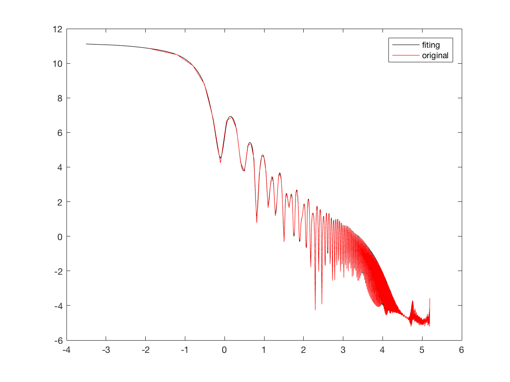
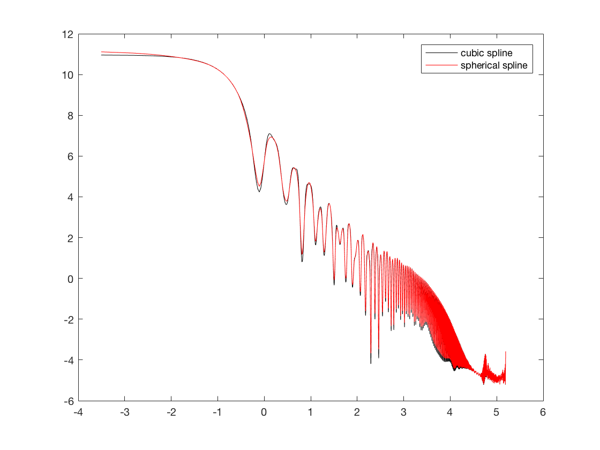
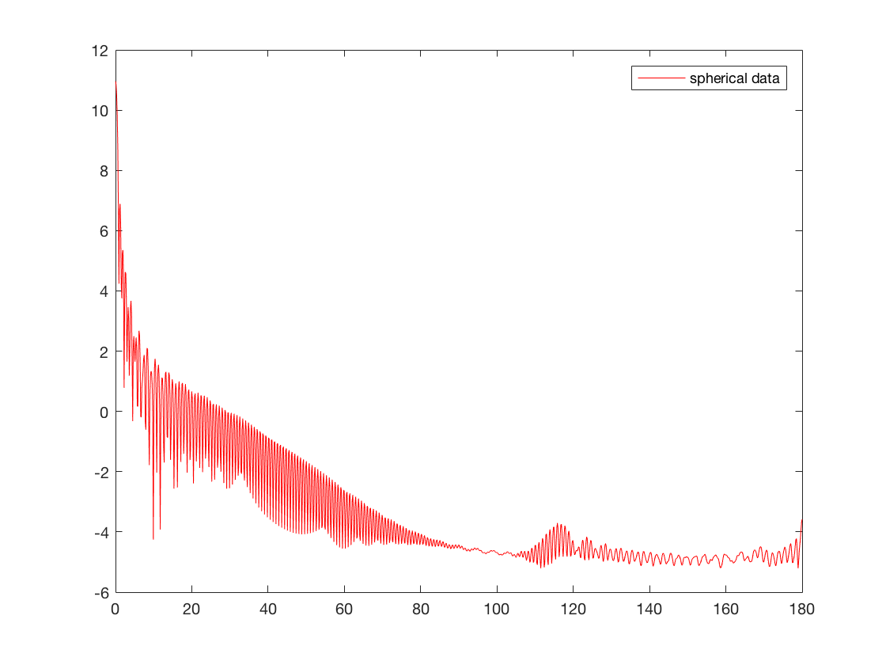

Contents
% test data from Mie thoery
Clear
clear ;close all;clc;
generate Mie data;
p_size=20.0 ; % size in um ; wavelg=0.50 ; % in um; realp= 1.20; % real part of the refractive index ; imagp = 0.003 ; % imaginary part of the refractive index ; numb_haf=600; % number of angles for half sphere; [thetas, phfs]=mie_data(p_size, wavelg, realp, imagp,numb_haf); phi0=0.5-pi; phi=0.5; theta_flip=-flip(thetas(2:length(thetas))); %phfs_flip=flip(phfs(2:length(phfs))); %new_theta=[theta_flip thetas]; new_theta=thetas; %new_phi=[phi0 phi]; new_phi=phi0; %new_phfs=[phfs_flip phfs]; new_phfs=phfs; % data preperation nphi=length(new_phi); sphere_data=repmat(new_phfs,[nphi 1]); sphere_data=sphere_data'; % dense distribution of phis theta_dense=0:(pi/6000):pi;
spline approximations
%theta_dense=thetas; [abe, RC]=spherical_spline(new_theta, new_phi, sphere_data,... theta_dense,new_phi); Rc_sph=RC';
plot some figures
angles=rad2deg(new_theta); angles_dense=rad2deg(theta_dense); figure(1); plot(log(angles_dense), Rc_sph,'k'); hold on; plot(log(angles), sphere_data,'r'); legend('fiting','original'); Rc_cubic=spline(new_theta,sphere_data, theta_dense); figure(2); plot(log(angles_dense), Rc_cubic,'k'); hold on; plot(log(angles), sphere_data,'r'); legend('fiting','original'); figure(3); plot(log(angles_dense), Rc_cubic,'k'); hold on; plot(log(angles_dense), Rc_sph,'r'); legend('cubic spline','spherical spline'); dif=sqrt(sum((Rc_cubic-Rc_sph).^2)); figure(4); plot(angles, sphere_data,'r'); legend('spherical data'); cmat=[Rc_cubic' Rc_sph'];  
Spherical spline
DESCRIPTIVE TEXT
function [abe,Rc_dense ]=spherical_spline(thetas,phi,sph_data,... theta_dense,phi_dense) % some parameters to be set deg=0; % degree of the spherical harmonics delta=0.00000005; % smoothness; if delta=0, no smoothness beta=1.0; % data column Yc=reshape(sph_data,[],1); % y colume % G matrix thetas_g=thetas-pi/2; % adjust to -pi/2 to pi/2 Gmatrix=greenmatrix(thetas_g,phi,thetas_g,phi); assignin('base','Gmatrix',Gmatrix); % B matrix Np=size(Gmatrix,1); Bmt=delta*beta*eye([Np Np]); % A matrix Amt=Amatrix(deg,thetas,phi); % assignin('base','Amatrix',Amt); % add smoothness to G Gmatrix=Gmatrix+Bmt; % c constants and a coefficients; cb=(Amt*(Gmatrix\(Amt)')); ab=(Amt*(Gmatrix\Yc)); c_const=cb\ab; a_cof=Gmatrix\(Amt)'*c_const - (Gmatrix\Yc); assignin('base','c_const',c_const); assignin('base','a_cof',a_cof); % construct the interpolation Rc_sph=Amt'*c_const-Gmatrix*a_cof; % error estimation abse=sum((Rc_sph-Yc).^2); abe=sqrt(abse); % compute G matrix dense the_d=theta_dense-pi/2.0; % -pi/2 to pi/2 Gmatrix_dense=greenmatrix(thetas_g,phi,the_d,phi_dense); assignin('base','Gmatrix_dense',Gmatrix_dense); % compute A matrix dense Amt_dense=Amatrix(deg,theta_dense,phi_dense); % assignin('base','Amatrix_dense',Amt_dense); % dense data construction; Rc_dense=Amt_dense'*c_const-Gmatrix_dense*a_cof; return end
Green matrix function
function G3=greenmatrix(theta0,phi0,theta1,phi1) % apply to theta range -pi/2 to pi; % phi range -pi to pi; dircos=great_circle_mesh(theta0,phi0,theta1,phi1); % compute the greens functions clog=dircos==1.0; dlog=dircos==-1.0; clogm=double(clog); % cos=1.0 dlogm=double(dlog); % cos=-1.0 Amins=1-dircos; Aplus=1+dircos; Nk=20; % number of term for summation xdir=Amins/2.0; k=1; L2=(xdir).^k./((k).^2); for k=2:Nk L2=L2+(xdir).^k./((k).^2); end G1=1-log(Amins).*(log(Aplus)-log(2))-L2-log(2)^2+log(2).*log(Aplus); G2=G1./(4*pi); G2(isnan(G2))=0; % replace the NANs with zeros; G3=G2+(1.0/(4.0*pi))*clogm+(1.0/(4.0*pi)-pi/24.0)*dlogm; return end
Generate Mie data;
function [thetagrid,pdata]=mie_data(siz,wavl,realp,imagp,nang_hf) % generate some spherical data from Mie theory % input: % 1. siz : particle radius in um (could be array) % 2. wavl: wavelength in um % 3. realp : real part of the refractive index % 4. img : imaginary part of the rafractive index % 5. nang_hf: angle number from 0~pi/2; % output : % 1. thetagrid: mesh data of phi and theta % 2. pdata: phase function data addpath('./mie') ; sizex=siz*2.0*pi/wavl; % size parameters; refin=realp+imagp*1i ; % refractive index; angs=2*(nang_hf-1)+1; % total angles; NS = length(sizex); % number of sizes ; QE(NS)=zeros; QS(NS)=zeros;GF(NS)=zeros; EC(NS)=zeros; QB(NS)=zeros; AB(NS)=zeros; p11(NS,angs)=zeros; for k=1:NS [ss1,ss2,QE(k),QS(k),QB(k),GF(k)]=mie(sizex(k),refin,nang_hf); phf=0.50*(abs(ss2).^2+abs(ss1).^2); EC(k)=QE(k)*pi*sizex(k)^2; AB(k)=QS(k)/QE(k); p11(k,1:end)=phf*4.0*pi/EC(k)/AB(k); end Angs=0:180/(angs-1):180; thetagrid=pi*Angs/180.0; pdata=log(p11); return end
Great Circle computation
function [dsig]=great_circle_mesh(theta0,phi0,theta1,phi1) % apply to theta range -pi/2 to pi; % phi range -pi to pi; % compute the great distance angle; [tm0, tm1]=meshgrid(theta0, theta1); [pm0, pm1]=meshgrid(phi0, phi1); cth0_c=cos(theta0); cth1_c=cos(theta1); sth0_c=sin(theta0); sth1_c=sin(theta1); cc12_n=cth1_c'*cth0_c; ss12_n=sth1_c'*sth0_c; cs12_n=cth1_c'*sth0_c; sc12_n=sth1_c'*cth0_c; % phi matrix ; pmm=abs(pm0-pm1); cphi=cos(pmm); sphi=sin(pmm); % outer product ; cth1 = cos(tm1); cc12_cphi = kron(cphi,cc12_n); ss12_m = repmat(ss12_n,size(cphi)); sc12_cphi = kron(cphi,sc12_n); cs12_m = repmat(cs12_n, size(cphi)); cth1_sphi = kron(sphi,cth1); uper=sqrt(cth1_sphi.^2. + (cs12_m-sc12_cphi).^2.) ; lower=ss12_m+cc12_cphi; sig=atan2(uper,lower); % cosine of angle dsig=cos(sig); return end
Compute A matrix
function Amn = Amatrix (m, theta_s,phi) % m is the order of the fundamental system % N is the number of data % etaN is the direction data storing % has the form of (theta phi), theta is in (0,pi) % phi is in (0, 2pi) [L2,T2]=meshgrid(phi,theta_s); thetac=reshape(T2,[],1); phic=reshape(L2,[],1); etaN=[thetac phic]; N=size(etaN,1); if (m==0) Amn(1,1:N)=sqrt(1/(4.0*pi)); return end if (m~=0) Amn((m+1)^2,N)=zeros; Amn(1,1:N)=sqrt(1/(4.0*pi)); for k=1:m Amn(k^2+1:(k+1)^2,1:N)=sphmonics(k,etaN(:,1),etaN(:,2),N); end end % rewrite the function using column matrix function sphm=sphmonics(deg,thetaco,phico,nd) Plm = legendre(deg,cos(thetaco)); % adjust the range of theta Sinf(deg,nd)=zeros; Cosf(deg,nd)=zeros; Al=1:deg; Al=Al'; Sinf(1:deg,1:nd)=(-1).^(Al).*sin(Al.*phico'); Cosf(1:deg,1:nd)=(-1).^(Al).*cos(Al.*phico'); lmf=(2*deg+1)*(factorial(deg-Al))/(4.0*pi)./(factorial(deg+Al)); lmf=sqrt(2)*sqrt(lmf); Norf=repmat(lmf,[1 nd]); Pmp=Norf.*Cosf.*Plm(2:deg+1,:); % m>0; Pmn=Norf.*Sinf.*Plm(2:deg+1,:); % m<0; Pmn=flip(Pmn); % m<0; norf0=sqrt((2*deg+1)/(4.0*pi)); % m=0; Pm0=norf0*Plm(1,:); sphm=[Pmn;Pm0;Pmp]; return end %size(Amn) return end